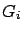
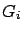

Siguiente: Cálculo de alturas efectivas
Subir: Cálculo de ganancia de
Anterior: Ángulos relativos a la
Índice General
La información del patrón de radiación consiste en una lista
ordenada de ángulos que varían entre 0 y 360 grados, con sus
respectivas ganancias relativas (el primer valor es el de 0 grados -
0 dB, que corresponde a la dirección de máxima propagación).
Es necesario determinar qué valor de ganancia tomar en el caso de un
ángulo que no se encuentre en dicha lista. Una opción podría ser
tomar el valor correspondiente al ángulo más cercano, pero esta
posibilidad se descartó por ser poco precisa en caso de contar con
un número pequeño de datos, optándose por usar interpolación lineal.
Para buscar los valores de ganancia entre los cuales hay que
interpolar, se implementó un algoritmo de forma de tratar de hacer
rápida la búsqueda en el patrón de radiación, sin tener que recorrer
la lista de datos innecesariamente. Para esto se basó en la idea que
el cálculo de atenuación se hace punto por punto en el mapa, por lo
que los valores de los ángulos no diferirán mucho de un punto a
otro. Si en la búsqueda anterior se determinó que el ángulo estaba
entre el índice e () de la tabla, se empezará a buscar en
ese intervalo, y no desde el principio. En caso de que el ángulo no
esté comprendido se determinará si es menor o mayor, luego de
acuerdo a eso el índice se incrementará o decrementará y se
volverá a buscar. Este procedimiento se repite hasta encontrar el
intervalo en donde interpolar. Hay que tener en cuenta que la
búsqueda en el patrón de radiación es circular, o sea, el último
dato es seguido del primero, y en ese caso es necesario sumar a
aquél 360 grados para evitar discontinuidades al hacer el cálculo de
interpolación. Dicho cálculo es:
donde es la ganancia a calcular para el ángulo  , y,
y  son las ganancias en los ángulos y
respectivamente, obtenidas del patrón de radiación.
, y,
y  son las ganancias en los ángulos y
respectivamente, obtenidas del patrón de radiación.
Siguiente: Cálculo de alturas efectivas
Subir: Cálculo de ganancia de
Anterior: Ángulos relativos a la
Índice General
SAPO